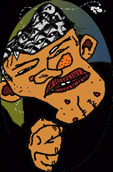

THE RACES TODAY sent shudders through these trees a hundred miles away; tonight we'll keep it revving around the camp fires. Bones ache from crashing on the cold earth, and for only an hour or two. We're busting beers and having a blast and "Hey Alan," says Fatso, squeezing his ridiculously little mama, "your girlfriend get lost on the trail?" . . . which isn't funny anyway since I'm the only one in the crew without a steady old lady on this run. I don't mind the wild light of the fire and some bad jokes to get me through the night. National parks is about all this nation's got going for us.
When headlight cuts across the trees it was like chopping down our revery. We might go apeshit if we get our hands on a ranger, radical, or just a lost camper--anyone but an Angel.
All accounted for in our bunch but he's wearing colors. The way the bike makes its way purposefully up the dirt road makes everyone wary. He's got to be an emissary the way he knows where we are and comes out here after daylight. In the flash of the fire his badge reads "'Frisco". It might be they need Oakland's assistance in war with the Warlocks or some other club, but that's doubtful . . . the way the pussies run and ride by the time the whole 'Frisco crew arrives. Maybe I'm paranoid, but I'm probably not the only one with itchy glove its the niggers up and revolutioned. All the Bay's been electric with it for months, the way they march and mug what they call might--Black Power . . . kee-ryst!
Fatso knits his brown and hands the 'Frisco boy, fresh off his bike, a brew, which he pops and bottom-ups in one movement, then on the down swoop wipes his denim sleeve across his mouth and tosses the empty into the fire. He gets another, which he sits with at a picnic table and drinks in leisurely gulps. Prez, alerted to what's going on by the sudden silence, has left his old lady in the bush and is fastening his belt.
The messenger crushes his second can. "Any of your boys know anything about what went down in LA?"
Prez doesn't even have to check before he says so: no. He knows he has a good grew, which doesn't mean we have to be altar boys but nothing goes down without his knowing. The Prez cracks two more cold ones, one in each fist, and sits across from the 'Frisco boy at the table, hands him one to wet his lips.
"Benedict Canyon--you know Cielo Drive?"
"Yep," says Prez. "That's rich-people country."
Twenty Angels at the ready, suddenly sober like only we know how. Adrenaline burns, alert. Stretching gloves and kicking dirt into the fire in the flickering, crackling quiet of the woods. These trees now loom over us where last night they seemed to tremble. Like that maddening scene in On the Waterfront where Johnny Friendly conducts his investigation into Terry Molloy, interrogating brother Charlie whether the kid's going to sing. The boys all fill out their race forms. Who do you think will take the 3rd? New Hope. Definitely. Everyone playing it so cool no one could possibly mind the gravity of what's happening between the principals. Men enjoying tension--there's something about it that brings them together. It's almost perverted.
"A murder down there and they're trying to connect to the Angels somehow, the Los crew has denied it to the pigs, now sending tremors up and down the coast to figure out if any boys know what's going on."
"What does Sonny think?"
"Nah. Real butcher job. Big mess--famous movie director's wife, big with a baby. Drugs, robbery, a weirdo frame-up. Not a contract."
"White?" says Prez.
"You know of any nigger movie directors?"
"Right."The firelight dims, a shed skin of its former flaming blaze, as nobody pays it any attention during the 'Frisco brother's fright story. It's like old camp fires days, only this time true and gruesome. One by one we sit down around the tale teller at the table, contemplate the scene: pregnant beauty and her rich friends under the eyes of a madman, maybe a gang. Crickets creak and beer cans glow a gross orange in the dying embers. Our eyes adjust like owls' in the low light and height of fear. Dead pine needles in the seat of my pants itch a grizzly green, and when out of the midnight blue I get a sudden chill
Fatso catches and laughs at my shuddering.
"What are you 'fraid of, Alan? Butcherman gonna get you?" That resets the festivity, all right. Think they're tougher but they just like to get a place to distract them from their own fear. I just want to know what kind of animal it takes to cut into a baby.